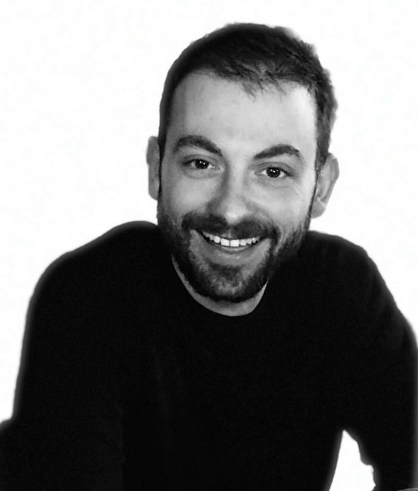

|
 |
AI/ML Robotics Engineer Athens, Greece Areas of interest: Control Theory, Robotics, Positioning Systems, (Visual-Inertial) SLAM, Artificial Intelligence, Deep Learning, Computer Vision, Object Detection, Object Tracking, Image Processing |
As an AI/ML Robotics Engineer at ICCS/NTUA, I am developing advanced computer vision algorithms to estimate stockpile volumes and extraction rates in opencast mining. This work contributes to the Integrated Earth Observation Platform, part of the Horizon Europe project TERRAVISION. I am also involved in developing a cutting-edge computer vision service for ergonomic assessment, leveraging lightweight pose estimation models. Most recently, I have started developing an AI solution leveraging zero-shot object detection, visual language models, and multimodal LLMs to assess recyclability of user-uploaded images complemented by a user-friendly web interface.
As a Senior AI Engineer at Intracom Defense I developed cutting-edge algorithms for resource-constrained devices with main goal to detect and track objects of interest within the scope of intelligence surveillance and reconnaissance (ISR) missions. I worked in a series of EU-funded projects such as LOTUS and PRIVILEGE. I also contributed to the development and preparation of EU Horizon and EDF proposals (e.g., PROTEAS and TICHE) by strengthening and aligning them with cutting-edge AI methodologies and technologies.
As an Experienced Researcher at Ericsson Research I mainly worked with positioning systems for GPS-denied environments exploiting cameras or lidars and inertial measurement units (IMU). The so called SLAM algorithms have great applications in mixed reality, robotics, drones, autonomous driving, and in general in any agent trying to perceive its enviroment, traverse it, and finally accomplish a specific task. The epitome of my career in Ericsson Research was the proof of concept that me and my team demonstrated at the Mobile World Congress 2019 in Barcelona where we showed how 5G networks with low-latency and high-bandwidth allow mixed reality, haptics, and 3D spatial audio be combined and offer the user a fully immersive telepresence. BBC Click covered our demo and a video is available here.
As a Research Engineer at SafeLine Sweden AB I developed a sensor node for condition monitoring, fault detection, and predictive maintenance of elevators, all parts of the so-called Internet-of-Elevators. My greatest achievement was the Independent Positioning System (IPS) released in 2017 which is running my code. My main contributions were 1) slight modifications to the Matlab application created by Isaac Skog and 2) conversion of the Matlab code into Java (for Android app) and C/C++ code (for the BeagleBone).